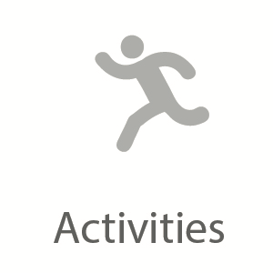
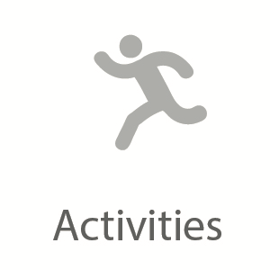

Explore the Great Canadian Rockies
by Nithya Krishnamoorthy

Calgary, Canada | 4 Days
#nature #wonderyonder #lakes #explore #hike #cave #adventure #foodieThe Rocky Mountains of Canada are a vast land – filled with dramatic wilderness, alpine lakes, diverse wildlife, and a ton of adventure. The Canmore-Banff area is famed for its jagged, ice-capped peaks, including 12,972' Mt. Robson, Takakkaw waterfall, dropping a sheer 990', the Athabasca Glacier, and the glacier-fed Lake Louise. And in the most remote place you'll find kind people and exquisite food.
This pre-planned package includes the following:
 



Getting There
The Canmore-Banff region is accessible by the scenic Trans-Canada Highway. While you can set Edmonton or Calgary as your homebase, we're most likely to get better fares into Calgary, and also end up with less driving time overall - which means more time in the wilderness! If you haven't already guessed you definitely need a rental car so you have freedom to explore and not feel locked up, like those big bus tours.
Book with Us Get PlangarooPerks
Itinerary
Day 1
After a quick breakfast and snacks for the road, head west from Calgary towards Canmore. The drive is slightly over an hour but you’ll wish it wouldn’t end because the scenery is breathtaking! Once you’ve arrived in Canmore, grab some grub before your cave adventure. At the entrance under Grotto Mountain a guide will take you through the cave and explain the formation and geology. You’ll see fossils and may even spot some animals! Hopefully you're not scared of being in a cave as this tour is packed with 6 hours of adventure, with 4 hours underground. The last tour begins at 11:45am so make sure you arrive enough. Optionally, you can also take a shorter tour - just let us know when you book with us. After exploring the natural beauty of the cave, take a stroll through Canmore’s downtown. It is a small town and you’ll find people are quite friendly. Grab dinner at at a local deli or head to any one of Canmore’s many restaurants and relax for the night.
Start the trip with a Cave Tour.

Home for the next few days.
Pasta dinner at a tavern.
Day 2
Now that you’ve explored the underground cave world, it’s time to get your hiking gear on and get outdoors. We recommend the Ha Ling Peak if you’re looking for a challenge. It’s worth the hike because you’ll see amazing 360 degree views from the top. It’s a moderate hike with some scrambling near the top but many beginners embark on this hike and take their time. The hike is about 3 hours roundtrip plus viewing time at the top. Pack layers because it can be windy at the top. Also recommended: poles and hiking boots. Cave - check. Hike - check. What’s next? A lake of course! Grassi lake is quite a sight with green and blue hues that’ll be sure to stand out in your pictures. There are two trails that lead to Grassi lake, an easy one and a harder one. If you’re feeling tired from the morning hike, stick to the easy trail and you’ll make it to Grassi lake in 20 minutes. If you’ve still got some energy, go for the harder trail and you’ll be rewarded with a beautiful waterfall on your way up. You’re most likely feeling tired from the day’s activities, so after dinner (and maybe a drink or two), head back to your resort and rest up for Banff tomorrow!
Hike up to the top.

Dip when you get back down.
Visit the local watering hole..
Day 3
After brunch head to Banff, and take in the views of this beautiful scenic region. Keep your eyes peeled for wildlife. You never know what you'll find. We've seen black bears, moose, elk just along the highway. First order of business, even though it feels upside-down, is to relax in the outdoor Banff Hot Springs while you look across the valley to Mount Rundle. Feeling rejuvenated and ready for your hike in Johnston Canyon? There are washrooms as well as a café if you’d like to grab some lunch before you start. Follow the trail to lower falls (about 30 minutes) and to the upper falls (another 20 minutes) where you’ll see stunning waterfalls. Once you’ve taken in the falls, we recommend continuing on to the ink pots which are six blue-green spring-fed pools surrounded by mountains. Including the ink pots, this hike will take you between 3-4 hours roundtrip. Head back to town for custom burgers, craft beers and shakes. It’s a small but cozy place, so don’t be surprised if there’s a bit of a wait!
So warm and relaxing, with an impressive view.

Exclusive hidden gem of a hike.
Miraculous Ink Pots of Banff.
Day 4
Last but not least is the iconic Lake Louise. Due to its popularity, it can get busy, so try to get out there as early as you can. It’ll also give you the chance to hike up to Lake Agnes, where you can enjoy tea and other edibles from a family run tea house which provide incredible views of the glaciers and mountains surrounding Lake Louise. This roundtrip hike to tea house will take about 5 hours. If you’d rather skip out on the hike, rent a canoe and go canoeing on Lake Louise! A short drive from Lake Louise is Lake Moraine. This lake is one of our favorites so it is a must see! You can enjoy the lake and the view from the bottom or take a short hike to the top for even better scenery. Take a minute to sit back, reflect on all this beauty around you before hitting the road. Allow 3 hours driving time to get back to Calgary and stops for food or viewing points. Drive safe and until next time!
Canoe ride on Lake Louise.
Stopping for some tea.
The spectacular lake Moraine.
Best Time to Travel
Calgary is best viewed between late May to the end of September. The closer to summer you go, the more filled the lakes will be, with an opportunity to jump in for a refreshing dip. The shoulder months like October and April are good too. The best deals are found in the winter, but Calgary is known for its unpredictable weather (snow/rain). We've visited Calgary in winter and in the summer and there is always something unique that Alberta conjures up for you, so talk to your Plangaroo agent and we will ensure you have an incredible, adventure-filled experience.